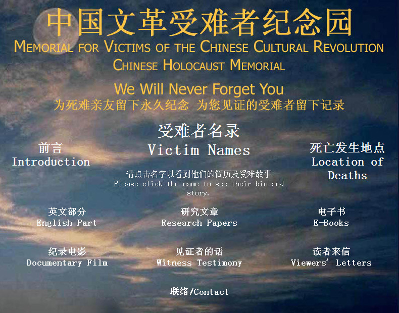

老杨急就章系列（16）
犯错还是犯罪？文化大革命五十周年谈
by 长沙杨飞
今天是无产阶级文化大革命五十周年纪念日。1966年5月16日，中共中央通过了毛主席起草的《五一六》通知，拉开了文革的序幕。随后的十年，中华民族陷入了前所未有的灾难，非正常死亡者有数百万之多。在这里鄙人谨以个人的名义向逝者及其家属表示哀悼。
你说死亡数百万人，请问具体数字到底是多少？很抱歉官方没有这个问题的答案。中外学界对此多有争论，从一百万到数千万的说法都有。R.J.Rummel教授说文革丧生者约为773万人。中央党史研究室说约有420余万人被关，172万余人死亡。1978年12月，叶剑英在中共中央工作会议上说：文革期间全国整了1亿人，死了2000万人。1980年邓小平对意大利女记者法拉奇说：“永远也统计不了，因为死的原因各种各样，中国又是那样广大，总之，人死了很多。”
俗话说人命关天，每一桩命案都是了不得的大事，为啥文革死了这么多人，几十年了却是一笔糊涂账？理论上来说，要统计大致死了多少人，这是可以做到的。连1937年南京大屠杀都精确地统计了（三十万人），离我们更近、人证物证更多的文革大屠杀却无法统计死亡人数，这在逻辑上说不过去。每个县市各自统计，汇总上来不就行了？文革全国死亡人数之所以是个悬案，鄙人觉得乃是政府有意为之，“非不能也，实不为也”。
在今日之中国，即便是最铁杆的左派毛粉也不敢说文革的好话（极个别神智不正常人士除外）。1981年中共中央关于《关于建国以来党的若干历史问题的决议》已经对文革盖棺定论，“这是一场由领导者错误发动，被反革命集团利用，给党、国家和各族人民带来严重灾难的内乱。。。对于文化大革命这一全局性的、长时间的左倾严重错误，毛泽东同志负有主要责任。”
上面这段话我是基本同意的，但是《决议》又说，“毛泽东同志的错误终究是一个伟大的无产阶级革命家所犯的错误。”这句话我不敢苟同。说毛主席只是犯了错误，这不符合逻辑。不说组织杀人罪，反人类罪，往最轻里说，渎职罪是肯定没跑的。煤井下死了几个人都得追究领导者的渎职罪，全国死了这么多人，却只是个错误？
我说是犯罪，你说是犯错，究竟谁对，则需要看具体案例，就像法庭辩论一样。如果话不说具体，吵吵嚷嚷几十年都不会有个结果。深入研究就会发现，文革死亡者之惨，确实是很吓人的，枪杀、棒打、绳勒、沉水、火烧、活埋等，无所不用其极，最恐怖还有广西文革流行的杀人挖心肝炒着吃等等。
可惜中国官方并没有一个详细的诸如文革白皮书来说明这些细节，可能高级干部能看到一些内参，但广大群众对死难者的具体情况是缺乏了解的。这是中国官方有意为之，因为政府不想让大家了解文革的细节。
这并不是我杜撰。我们都知道，邓小平同志对文革研究有“宜粗不宜细”的重要指示。前中共中央总书记胡耀邦同志1981年对如何处理湖南道县惨案遗留问题曾指示说：“1967年7、8、9三个月，全国不少省发生了这样的事情。这是康生、谢富治他们搞起来的。现在已经13年了，这样的事情不要声张了，处理完了就算了，慢慢让它平息下去。”
大事化小，小事化了，这差不多就是官方对文革的态度。犯罪变成了犯错，批评一下就好了。官方这么草菅人命，其原因很简单，文革的细节若是公布出来，明显都属于反人类罪，而不是官方所说的“犯错”。中国官方为了防止被打脸，所以对文革细节问题几十年来都采取回避和禁止研究的态度。
官方不研究，但学界和民间还是有人在做这事。举个例子，现任教于美国芝加哥大学东亚语言与文化系的王友琴博士，她长期从事文化大革命研究，2004年在香港出版了《文革受难者》一书，详细叙述了四百多人的死亡经过。这本书是她多年的研究成果。王友琴博士还是“文革受难者纪念园”网站的创办人，而这个网站早在2002年3月就被中国政府屏蔽。

关注老杨作品：
1，杨飞摄影 www.midphoto.com
2，微信：yangfei789288
3，微信公众号：长沙杨飞
4，新浪微博@长沙杨飞
5，推特Twitter@feiyang17
6，Facebook：yangfei999999@hotmail.com